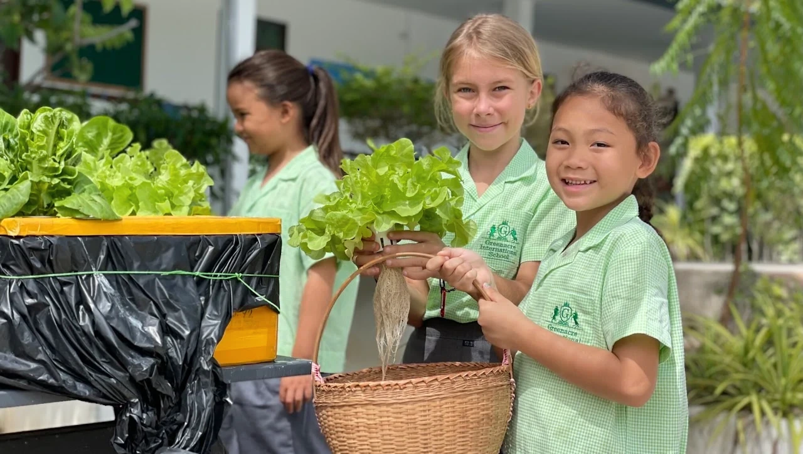

Services
Practical services that support the school day, including catering, uniform and transport.
Services for Greenacre families
Greenacre offers a daily school lunch. Students may also bring a packed lunch. Vegetarian and vegan options are available.
The school shop supplies Greenacre uniform, including lightweight everyday uniform and separate sportswear designed for Thailand's climate. Please contact the school directly for further uniform details.
School transport is arranged in three zones, as set out below. Please contact the school to confirm routes and pick-up arrangements.
Birthday celebrations: Families can contact the school to arrange a healthy fruit birthday cake for their child to share with classmates. A small charge applies.
Meals during the school day
Fresh morning snacks and lunches are prepared at school in the kitchen adjoining the dedicated dining hall. Early Years children eat within their own area, while Primary and Secondary students use the dining hall in sittings.
Greenacre encourages healthy choices and offers salad alongside meals. Families should contact the school for the latest menu, as menus change during the year.

Transport zones
From the school to Lipayai Bridge, and from the school to Makro Lamai.
From Lipayai Bridge to Maenam Crossroad, and from Makro Lamai to Panyadee Bridge.
All areas beyond the Zone 2 boundaries.
Please contact the school to confirm routes and pick-up arrangements. Transport charges are listed in the 2026/27 fee schedule.
Need practical information?
For current transport arrangements, uniform availability, lunch menus or other day-to-day services, contact the school office at contact@greenacre.ac.th.